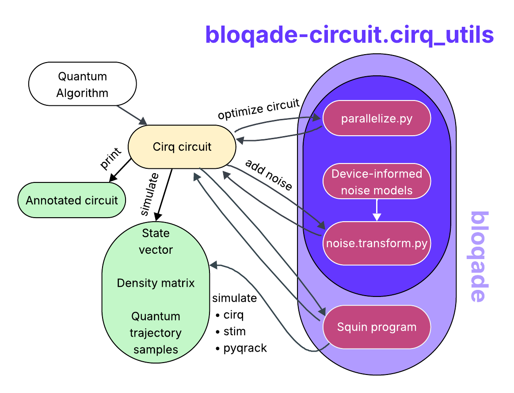
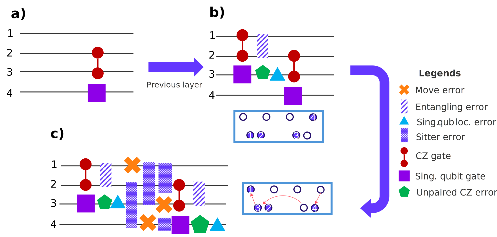
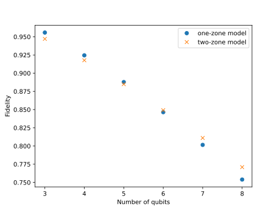

Simulating noisy circuits for near-term quantum hardware
With recent experimental demonstrations of digital quantum circuits executed on neutral atom devices, a new era is beginning for this still-nascent technology. At QuEra, we have used our newly completed Gemini-class quantum computer to demonstrate a key building block of fault-tolerant quantum computation: logical magic state distillation. By both leveraging the universal quantum gate-set and all-to-all connectivity offered by our hardware, while also maximizing parallelism, this work demonstrates the potential of neutral atom QPUs. As the availability of Gemini-class machines increases in the near future, it is paramount to provide researchers with tools to develop quantum circuits that are well-suited for Gemini. With that goal in mind, we have released circuit-level noise models in bloqade that closely mimic the performance of the device for small system sizes, allowing for circuit optimization and feasibility checks.
Motivation for Gemini-class digital QPUs
Operating in an analog mode of quantum computation QuEra's Aquila quantum computer has opened exciting opportunities to leverage the flexibility of a neutral atom platform to explore the application forefront (such as optimization problems, and machine learning), as well as to address more scientifically oriented questions (preparation of exotic phases of matter).
In our journey towards building useful quantum computers, however, we find that operating in an analog mode limits the range of problems that we can address, as we only have control of a handful of parameters of the underlying device Hamiltonian. This is where a fully programmable digital quantum computer comes into the picture. The promise of this mode of operation is the ability to encode non-native problems to the neutral atom platform. For instance, one of the envisioned and most exciting applications of quantum computers is the accurate simulation (in terms of estimating ground state energy) of electrons in molecules and materials. The fermionic statistics of the target particles to simulate stand in contrast to the bosonic nature of the Rubidium atoms that constitute the building blocks of our platform.
Furthermore, we need full control in the quantum device to encode interactions and tunneling parameters between the fermionic modes that discretize our target molecules and materials. In our quest to reach this level of maturity in quantum hardware, we introduce Gemini-class devices, that incorporate digital programmability features into our neutral atom quantum computing platform.
Circuit-level compared to hardware-level programming
Gemini-class devices are digital quantum computers. This allows the user to work on the circuit-level of abstraction rather than the hardware-level. While this opens many new classes of problems for study with our quantum hardware, in the current era of noisy intermediate scale quantum devices, it is imperative to consider potential noise processes when developing quantum programs.
When writing a circuit, noise processes can be taken into account as channels that cause decoherence, thereby reducing the overall circuit fidelity. If the fidelity is too low, the results of the computation may include unwanted bias or the signal may be suppressed towards zero. Therefore, before executing a circuit it is critical to know whether this circuit will actually yield the desired results. This is where emulation comes in, which, in order to faithfully represent the results of Gemini, needs to account for noise.
At the hardware level, quantum circuit design always needs to incorporate (or work around) the noise that is inherent to the QPU system. This comes at the loss of abstraction and subsequently high-level tooling. At the same time, however, it enables researchers to devise individual strategies in order to suppress noise in specific applications, which will oftentimes outperform today's general-use compilers. Here, we will focus on circuit-level programming, but please refer to bloqade-shuttle to learn more about our hardware-level programming capabilities.
Even including noise channels, circuit-level programming remains abstract in that you do not have to consider the specific hardware you are running the circuit on. However, it is the very nature of the noise channels, where the details of the hardware come into play. To know whether a circuit will execute with a sufficiently high fidelity, the noise parameters and channels need to represent the infidelity of the gates executed on the particular hardware (in this case, Gemini).
In order to provide users with the required set of tools, we have spent considerable time researching and implementing an easy-to-use framework that allows you to include Gemini's particular noise processes in a high-level circuit.
Heuristic approach to noise
The abstraction of noise to the circuit level allows all the noise sources on the device to be combined into "effective" Pauli noise channels. The effective channels are heuristic in nature, designed to capture the average behavior of atoms when the system performs certain circuit-level operations. The quantitative error probabilities are based on benchmarking experiments on Gemini hardware. They also take into account the dynamical decoupling that is needed to eliminate the effects of differential stark shifts during atom moves. Overall, the models can be expressed by six main noise channels:
- Global single qubit gate error
- Depolarizing error applied to all qubits after a single qubit gate is applied to all qubits in parallel.
- Local single qubit gate error
- Depolarizing error applied to gated single qubits after a single qubit gate is applied to a subset of qubits.
- CZ gate error
- Pauli error channel that is biased towards phase errors applied to both qubits that are within the blockade radius during a Rydberg pulse.
- Incorporates errors from the Rydberg pulse and dynamical decoupling.
- Unpaired Rydberg error
- Pauli error channel is biased towards phase errors applied to single qubits that experience a Rydberg pulse but do not have a partner qubit within the blockade radius.
- Incorporates errors from the Rydberg pulse and dynamical decoupling.
- Mover error
- Pauli error channel that is also biased towards phase errors applied to qubits that must move during a circuit.
- Incorporates errors from transferring atoms from fixed tweezer traps to dynamical traps for moves, dynamical decoupling, move errors, and idling errors.
- Sitter error
- Pauli error channel that is applied to atoms that are stationary while other atoms are moving.
- Incorporates errors from dynamical decoupling and idling errors.
Example: Noise in the GHZ state
It is often most convenient to study an example in order to learn how to use a set of tools. To this end, we included a tutorial that shows how to annotate a GHZ preparation circuit using the different heuristic noise models. We'll discuss some underlying concepts and highlight interesting parts of the tutorial in this section. If you want all the details, please find the full example here.
Flow chart
The intended workflow for using the circuit-level noise models is described in the flow chart below. The first step for
a user interested in testing a specific quantum algorithm is to write an explicit circuit
in Cirq. Once defined in Cirq, the circuit operations can be visualized with
print(circuit), which can be used to inspect the circuit after being passed through the various transformers within bloqade.
Also, at any point, one may choose to simulate the result of the circuit with the tools provided by Cirq.
By passing the circuit through the transformers in parallelize.py, within the bloqade-circuit.cirq_utils repository,
the circuit structure can be brought closer to optimal for the neutral atom platform. Then, by using the transformers
in noise.transform.py, Pauli error channels are locally added to the circuit. The function transform_circuit acts as
a wrapper for the different noise models, which correspond to different modes of hardware operation.
Finally, we maintain interoperability between Squin (Bloqade's circuit-level intermediate representation) and Cirq. Squin allows for simulation with different backends, including PyQrack, while also allowing for lowering to hardware-level programs for execution on Gemini.

Annotated circuit
In practice, our heuristic noise models are used to annotate circuits with incoherent channels, with a "coarse-grained"
awareness of hardware. As a simple example, let's consider the following that assumes noise annotation according to a
two-zone layout using the GeminiTwoZoneNoiseModel in bloqade-circuit.cirq_utils.noise.models:

In our annotation scheme, assume that we are iterating sequentially over the layers of a quantum circuit, and we encounter the layer depicted in a) on which we will add the noise channels. One important assumption in our two-zone model to keep in mind is that the qubits corresponding to the gates appearing in a given layer will be treated as being in the gate zone, and thus the rest of the qubits are assumed to be in the storage zone.
To capture the cost of moves to reach a given configuration, we need to take a closer look at the layer that precedes our current target layer. In b), we explicitly show the layer that was annotated with noise in the previous iteration, with its corresponding qubit spatial layout below it. The move cost to reach the target qubit configuration before qubit execution is shown in c), and noise annotation is carried out according to three sequential stages: 1) qubits that need to be removed from the gate zone undergo move error (orange crosses), and the rest get sitter error, 2) similarly, qubits that need to be added to the gate zone get move error and the rest get sitter noise, and 3) additional move error to "pair up" qubits is added before gate execution (notice that more than one layer might be needed to account for this cost).
Finally, noise is annotated after gates, where it is assumed that entangling gates are executed in hardware before single qubit gates. In doing so, qubits that are not participant in the entangling gates receive unpaired cz error (green pentagons).
GHZ data
Now, let's look at some results of the example that compares the different noise processes.
The different noise models lead to overall different infidelities of the circuit:

As you'd expect, the general trend is that fidelity decreases with a growing number of qubits. Depending on how many qubits you need, you may want to run the above simulation in order to decide whether you'd want to operate Gemini in a one-zone or a two-zone setup.
On a more abstract level, you may also want to optimize the circuit that you use to obtain the result you want. The example uses a linear-depth GHZ algorithm, which is arguably not the best choice to prepare a GHZ state.
Using our noise framework, you can explore and analyze different strategies to find the one best suited for your particular application.
Learn more
The future for Gemini is bright! Apart from demonstrating logical magic state distillation, Gemini-class QPUs also form the foundation of QuEra's participation in the Quantum for Bio program. QuEra will serve as the hardware provider for 2 of 6 of the teams that have advanced to the final phase of the challenge. With an eye towards general availability of Gemini-class devices, there's no better time for quantum developers to begin crafting circuits that are well-suited for Gemini. The documentation for Bloqade-circuit as well as our tutorial guides are a great place to start.